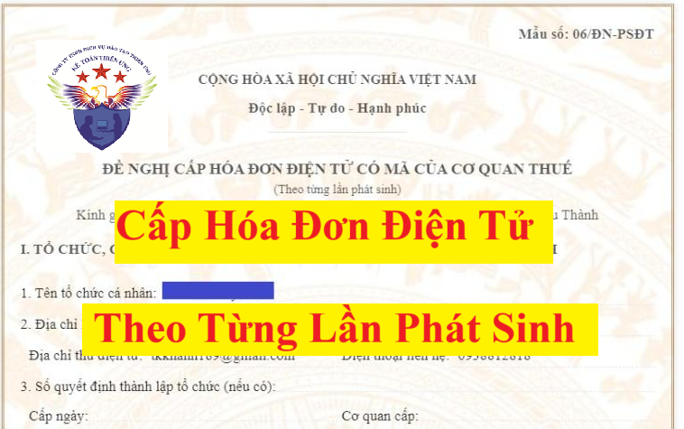

Quy định về việc cấp hóa đơn điện tử có mã của cơ quan thuế theo từng lần phát sinh đang được quy định tại Khoản 10 Điều 1 Nghị định 70/2025/NĐ-CP sửa đổi bổ sung khoản 2, điều 13 của Nghị định 123/2020/NĐ-CP:
Cụ thể:
Quy định về cấp và kê khai xác định nghĩa vụ thuế khi cơ quan thuế cấp hóa đơn điện tử có mã của cơ quan thuế theo từng lần phát sinh như sau:
Quy định về cấp và kê khai xác định nghĩa vụ thuế khi cơ quan thuế cấp hóa đơn điện tử có mã của cơ quan thuế theo từng lần phát sinh như sau:
1. Loại hóa đơn cấp theo từng lần phát sinh
1.1) Cấp hóa đơn điện tử có mã của cơ quan thuế theo từng lần phát sinh là hóa đơn bán hàng trong các trường hợp:
1.1.1) Hộ kinh doanh, cá nhân kinh doanh theo quy định tại khoản 4 Điều 91 Luật Quản lý thuế số 38/2019/QH14 không đáp ứng điều kiện phải sử dụng hóa đơn điện tử có mã của cơ quan thuế nhưng cần có hóa đơn để giao cho khách hàng;
1.1.2) Tổ chức không kinh doanh nhưng có phát sinh giao dịch bán hàng hóa, cung cấp dịch vụ;
1.1.3) Doanh nghiệp sau khi đã giải thể, phá sản, đã chấm dứt hiệu lực mã số thuế có phát sinh thanh lý tài sản cần có hóa đơn để giao cho người mua;
1.1.4) Doanh nghiệp, tổ chức kinh tế, hộ kinh doanh, cá nhân kinh doanh thuộc diện nộp thuế giá trị gia tăng theo phương pháp trực tiếp thuộc các trường hợp sau:
1.1.4.1) Ngừng hoạt động kinh doanh nhưng chưa hoàn thành thủ tục chấm dứt hiệu lực mã số thuế có phát sinh thanh lý tài sản, hàng hóa cần có hóa đơn để giao cho người mua;
1.1.4.2) Tạm ngừng hoạt động kinh doanh cần có hóa đơn giao cho khách hàng để thực hiện các hợp đồng đã ký trước ngày cơ quan thuế thông báo tạm ngừng kinh doanh;
1.1.4.3) Bị cơ quan thuế cưỡng chế bằng biện pháp ngừng sử dụng hóa đơn;
1.1.4.4) Doanh nghiệp đang làm thủ tục phá sản nhưng vẫn có hoạt động kinh doanh dưới sự giám sát của Tòa án;
1.1.4.5) Doanh nghiệp, tổ chức kinh tế, tổ chức khác, hộ kinh doanh, cá nhân kinh doanh trong thời gian giải trình hoặc bổ sung tài liệu quy định tại điểm d khoản 2 Điều 16 Nghị định này;
1.2) Cấp hóa đơn điện tử có mã của cơ quan thuế theo từng lần phát sinh là hóa đơn giá trị gia tăng trong các trường hợp:
1.2.1) Doanh nghiệp, tổ chức kinh tế, tổ chức khác thuộc diện nộp thuế giá trị gia tăng theo phương pháp khấu trừ thuộc các trường hợp sau:
1.2.1.1) Ngừng hoạt động kinh doanh nhưng chưa hoàn thành thủ tục chấm dứt hiệu lực mã số thuế có phát sinh thanh lý tài sản, hàng hóa cần có hóa đơn để giao cho người mua;
1.2.1.2) Tạm ngừng hoạt động kinh doanh cần có hóa đơn giao cho khách hàng để thực hiện các hợp đồng đã ký trước ngày cơ quan nhà nước có thẩm quyền thông báo tạm ngừng kinh doanh;
1.2.1.3) Bị cơ quan thuế cưỡng chế bằng biện pháp ngừng sử dụng hóa đơn;
1.2.1.4) Doanh nghiệp đang làm thủ tục phá sản nhưng vẫn có hoạt động kinh doanh dưới sự giám sát của Tòa án;
1.2.1.5) Doanh nghiệp, tổ chức kinh tế, tổ chức khác trong thời gian giải trình hoặc bổ sung tài liệu quy định tại điểm d khoản 2 Điều 16 Nghị định này.
1.2.2) Tổ chức, cơ quan nhà nước không thuộc đối tượng nộp thuế giá trị gia tăng theo phương pháp khấu trừ có bán đấu giá tài sản (trừ trường hợp bán tài sản công nêu tại khoản 3 Điều 8 Nghị định này), trường hợp giá trúng đấu giá là giá bán đã có thuế giá trị gia tăng được công bố rõ trong hồ sơ bán đấu giá do cơ quan có thẩm quyền phê duyệt thì được cấp hóa đơn giá trị gia tăng để giao cho người mua.
2. Thủ tục cấp hóa đơn điện tử có mã của cơ quan thuế theo từng lần phát sinh theo quy định tại Nghị định 70/2025/NĐ-CP
Doanh nghiệp, tổ chức kinh tế, tổ chức khác, hộ kinh doanh, cá nhân kinh doanh thuộc trường hợp được cấp hóa đơn điện tử có mã của cơ quan thuế theo từng lần phát sinh gửi đơn đề nghị cấp hóa đơn điện tử có mã của cơ quan thuế theo Mẫu số 06/ĐN-PSĐT Phụ lục IA ban hành kèm theo Nghị định này đến cơ quan thuế và truy cập vào Cổng thông tin điện tử của Tổng cục Thuế để lập hóa đơn điện tử.
Để xem và tải Mẫu số 06/ĐN-PSĐT theo Nghị định 70/2025/NĐ-CP thì các bạn xem tại đây:
Doanh nghiệp, tổ chức kinh tế, tổ chức khác, hộ kinh doanh, cá nhân kinh doanh khai hồ sơ khai thuế theo quy định pháp luật về quản lý thuế.
Người nộp thuế thuộc trường hợp được cấp hóa đơn bán hàng theo từng lần phát sinh tại điểm a.1 khoản 2 Điều này thì phải nộp đầy đủ số thuế phát sinh trên hóa đơn đề nghị cấp theo quy định của pháp luật thuế giá trị gia tăng, thu nhập cá nhân, thu nhập doanh nghiệp hoặc số phát sinh phải nộp theo pháp luật quản lý thuế và các loại thuế, phí khác (nếu có).
Người nộp thuế thuộc trường hợp được cấp hóa đơn giá trị gia tăng theo từng lần phát sinh tại điểm a.2 khoản 2 Điều này thì phải nộp số thuế giá trị gia tăng trên hóa đơn giá trị gia tăng theo từng lần phát sinh hoặc số phát sinh phải nộp theo pháp luật quản lý thuế.
Sau khi doanh nghiệp, tổ chức kinh tế, tổ chức khác, hộ kinh doanh, cá nhân kinh doanh đã nộp đủ thuế hoặc số phát sinh phải nộp ngay trong ngày làm việc hoặc chậm nhất là ngày làm việc tiếp theo, cơ quan thuế cấp mã của cơ quan thuế trên hóa đơn điện tử.
Doanh nghiệp, tổ chức kinh tế, tổ chức khác, hộ kinh doanh, cá nhân kinh doanh tự chịu trách nhiệm về tính chính xác của các thông tin trên hóa đơn điện tử theo từng lần phát sinh được cơ quan thuế cấp mã. Trường hợp hóa đơn điện tử theo từng lần phát sinh cần phải lập hóa đơn điều chỉnh hoặc thay thế, doanh nghiệp, tổ chức kinh tế, tổ chức khác, hộ kinh doanh, cá nhân kinh doanh gửi đơn đề nghị cấp hóa đơn điện tử có mã của cơ quan thuế theo Mẫu số 06/ĐN-PSĐT Phụ lục IA ban hành kèm theo Nghị định này đến cơ quan thuế để được cấp hóa đơn điện tử điều chỉnh hoặc thay thế cho hóa đơn đã lập. Việc lập hóa đơn điều chỉnh hoặc thay thế thực hiện theo quy định tại Điều 19 Nghị định này và việc nộp thuế, các khoản thu khác thuộc ngân sách nhà nước tính trên doanh thu chênh lệch tăng trên hóa đơn thực hiện theo quy định của pháp luật quản lý thuế.
3. Xác định cơ quan thuế cấp hóa đơn điện tử có mã của cơ quan thuế theo từng lần phát sinh
c.1) Đối với tổ chức, doanh nghiệp: Cơ quan thuế quản lý địa bàn nơi tổ chức, doanh nghiệp đăng ký thuế, đăng ký kinh doanh hoặc nơi tổ chức đóng trụ sở hoặc nơi được ghi trong quyết định thành lập hoặc nơi phát sinh việc bán hàng hóa, cung ứng dịch vụ.
c.2) Đối với hộ kinh doanh, cá nhân kinh doanh
c.2.1) Đối với hộ kinh doanh, cá nhân kinh doanh có địa điểm kinh doanh cố định: Hộ kinh doanh, cá nhân kinh doanh nộp hồ sơ đề nghị cấp hóa đơn điện tử có mã của cơ quan thuế theo từng lần phát sinh tại Chi cục Thuế quản lý nơi hộ kinh doanh, cá nhân kinh doanh tiến hành hoạt động kinh doanh.
c.2.2) Đối với hộ kinh doanh, cá nhân kinh doanh không có địa điểm kinh doanh cố định: Hộ kinh doanh, cá nhân kinh doanh nộp hồ sơ đề nghị cấp hóa đơn điện tử có mã của cơ quan thuế theo từng lần phát sinh tại Chi cục Thuế nơi cá nhân cư trú hoặc nơi hộ kinh doanh, cá nhân đăng ký kinh doanh.

4. Lưu ý:
Theo điểm b, khoản 14, điều 10 của Nghị định 123/2020/NĐ-CP thì:
b) Đối với hóa đơn điện tử của cơ quan thuế cấp theo từng lần phát sinh không nhất thiết phải có chữ ký số của người bán, người mua.
5. Phòng Tuyên truyền - Hỗ trợ người nộp thuế hướng dẫn cấp hóa đơn điện tử có mã của cơ quan thuế theo từng lần phát sinh như sau:
5.1. ĐỐI VỚI HỒ SƠ PHÁT SINH LẦN ĐẦU
5.1. ĐỐI VỚI HỒ SƠ PHÁT SINH LẦN ĐẦU
Khi người nộp thuế (NNT) có nhu cầu lập hóa đơn điện tử (HĐĐT) theo từng lần phát sinh, NNT gửi đơn đề nghị cấp HĐĐT có mã của cơ quan thuế (mẫu số 06/ĐN-PSĐT) và các tài liệu liên quan tới đề nghị cấp HĐĐT (như hợp đồng kinh tế, biên bản nghiệm thu, biên bản thanh lý,...) đến cơ quan thuế quản lý trực tiếp.
Công chức thuộc Bộ phận tiếp nhận dữ liệu tiếp nhận đề nghị Mẫu số 06/ĐN-PSĐT bản giấy có ký, đóng dấu (nếu có) của NNT và các tài liệu liên quan.
Khi hồ sơ của NNT đáp ứng các nội dung theo quy định, công chức thuộc Bộ phận tiếp nhận dữ liệu hướng dẫn NNT thực hiện các thủ tục khai, nộp thuế theo quy định.
Trong thời gian 01 ngày làm việc kể từ khi NNT bổ sung đầy đủ chứng từ nộp thuế, công chức thuộc Bộ phận tiếp nhận dữ liệu trình lãnh đạo phê duyệt hồ sơ đề nghị cấp HĐĐT có mã theo từng lần phát sinh. Tài khoản và mã hồ sơ được gửi đến địa chỉ thư điện tử (e-mail) của NNT đăng ký trên Mẫu số 06/ĐN-PSĐT.
NNT sử dụng tài khoản trên Cổng điện tử để lập HĐĐT có mã theo từng lần phát sinh (như hướng dẫn tại Bước 6, Bước 7 dưới dây).
5.2. ĐỐI VỚI HỒ SƠ PHÁT SINH TỪ LẦN THỨ 2 TRỞ ĐI, NNT thực hiện theo trình tự các bước như sau:
(1) Lập đề nghị cấp HĐĐT có mã cơ quan thuế theo từng lần phát sinh
Bước 1: NNT truy cập vào địa chỉ https://hoadondientu.gdt.gov.vn và sử dụng tài khoản trên Cổng điện tử để lập HĐĐT có mã theo từng lần phát sinh.
NNT thực hiện nhập đầy đủ các thông tin Tên đăng nhập, Mật khẩu, Mã captcha Sau đó nhấn Đăng nhập để thực hiện đăng nhập tài khoản ( kiểm tra tên đăng nhập và mật khẩu tại địa chỉ e-mail của NNT đã đăng ký với cơ quan Thuế).
Bước 2: Sau khi đăng nhập, NNT Chọn “Đề nghị cấp hóa đơn” => Chọn “xử lý đề nghị”
Sau đó chọn “Thêm mới”
Bước 3: NNT ghi đầy đủ thông tin của Tổ chức, cá nhân đề nghị cấp lẻ hóa đơn, Thông tin người nhận hóa đơn, Thông tin người mua, Tên hàng hóa, dịch vụ và Thông tin về hợp đồng mua bán hàng hóa, dịch vụ (Chú ý địa chỉ e-mail sử dụng của NNT để cơ quan thuế gửi thông báo)
NNT nhấn vào “Xem đề nghị” để kiểm tra lại các thông tin đã nhập => nhấn vào “Phê duyệt” để gửi đề nghị đến cơ quan thuế.
Để tránh bị mất dữ liệu trong lúc thao tác, NNT nên nhấn vào “Lưu tạm”.
Bước 4: NNT in Đề nghị cấp HĐĐT có mã của cơ quan thuế (Mẫu số 06/ĐN-PSĐT) và gửi kèm các tài liệu liên quan tới đề nghị cấp HĐĐT đến cơ quan thuế quản lý trực tiếp.
Bước 5: Công chức thuộc Bộ phận tiếp nhận dữ liệu tiếp nhận đề nghị Mẫu số 06/ĐN-PSĐT bản giấy có ký, đóng dấu (nếu có) của NNT và các tài liệu liên quan.
Khi hồ sơ của NNT đáp ứng các nội dung theo quy định, công chức thuộc Bộ phận tiếp nhận dữ liệu hướng dẫn NNT thực hiện các thủ tục khai, nộp thuế theo quy định.
Trong thời gian 01 ngày làm việc kể từ khi NNT bổ sung đầy đủ chứng từ nộp thuế, công chức thuộc Bộ phận tiếp nhận dữ liệu trình lãnh đạo phê duyệt hồ sơ đề nghị cấp HĐĐT có mã theo từng lần phát sinh. Mã hồ sơ được gửi đến địa chỉ e-mail của NNT đăng ký trên Mẫu số 06/ĐN- PSĐT.
(2) Lập hóa đơn điện tử có mã cơ quan thuế theo từng lần phát sinh:
Bước 6: Để lập HĐĐT có mã theo từng lần phát sinh trên Cổng điện tử, NNT Chọn “Quản lý hóa đơn phát sinh” => Chọn “Lập hóa đơn mới”
NNT nhập các thông tin bắt buộc và nhấn vào “Lập hóa đơn”
Bước 7: NNT nhập đầy đủ các thông tin bắt buộc trên hóa đơn
NNT nhấn vào “Xem hóa đơn” để kiểm tra lại các thông tin đã nhập è nhấn vào “Phê duyệt” để gửi HĐĐT đến cơ quan thuế để cấp mã.
Để tránh bị mất dữ liệu trong lúc thao tác, NNT nên nhấn vào “Lưu tạm”.
Chậm nhất đầu giờ ngày làm việc tiếp theo kể từ khi NNT gửi HĐĐT, Bộ phận tiếp nhận dữ liệu đối chiếu thông tin HĐĐT đề nghị cấp mã với hồ sơ đề nghị cấp hóa đơn có mã theo từng lần phát sinh. Trường hợp thông tin khớp đúng, Bộ phận tiếp nhận dữ liệu thực hiện xác nhận để Hệ thống HĐĐT tự động cấp mã theo quy định.
Trường hợp thông tin không khớp đúng, Bộ phận tiếp nhận dữ liệu lập thông báo theo Mẫu số 01-1/QTr- HĐĐT và gửi cho NNT.